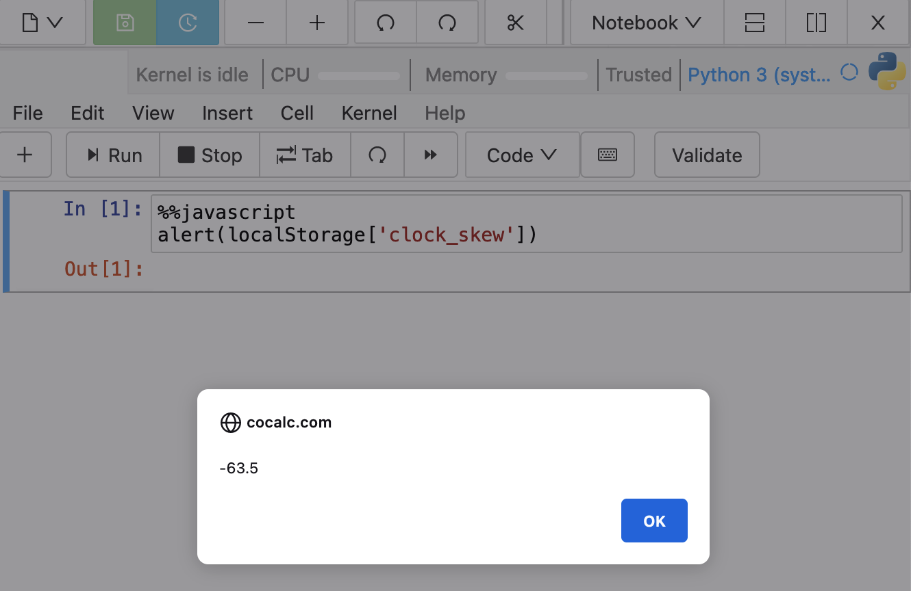

CoCalc says your clock is off¶
While using CoCalc, you may see a warning message pop up saying your clock is off:

Things to try¶
If you get that warning, here are some things to try:
Check system time on your computer and make sure it matches correct time for your timezone.
If you recently moved to a different timezone, check whether you have set your computer’s clock manually rather than automatically detecting your current timezone. Try setting your computer to automatically connect to a time server.
Restart your web browser.
Try a different web browser.
Reboot your computer.
If none of the above helps, visit this link: http://browserspy.dk/date.php and take a screenshot of all the “Date and Time Information” output. The bottom line of the report, “Difference between server and PC time”, should report a difference of 0 seconds. Email the screenshot to help@cocalc.com along with the following information:
- your computer’s operating system name and version
- browser name and version
- city where you are connecting from
Checking your clock skew¶
If you want to make sure your computer’s clock is correct (as far as CoCalc is concerned), you can check CoCalc’s measurement for clock skew in your browser in either of the two ways below.
create a jupyter notebook with Python 3 (system-wide) kernel and enter the following into a compute cell:
%%javascript alert(localStorage['clock_skew'])
or, with your browser open on a CoCalc tab, open your browser’s javascript console and evaluate the following expression:
localStorage['clock_skew']
A value of clock skew less than 120,000 (two minutes) is acceptable.

{kind=link}